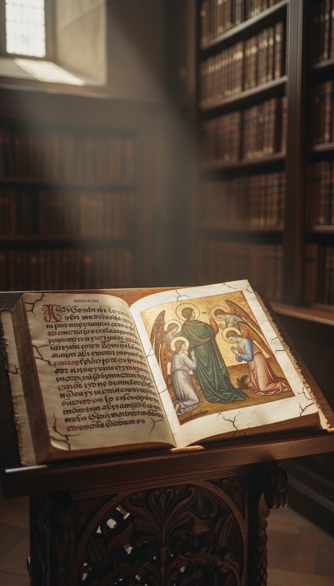

Satan fell because he refused to bow to Adam. The Bible never states his motive, but the Life of Adam and Eve, a Jewish text composed around the first century and copied in Latin and Greek for more than a thousand years, puts the confession in Satan's own mouth. God made Adam in His image. The archangel Michael ordered every angel in heaven to worship the new man. Satan refused, because he was made first, and heaven threw him down to earth for it.
Read that again. The first rebellion in the universe was about you. The war in heaven started over a creature of dust, and the book that says so was cut out of the Bible you were handed.

The Book They Kept Out of Your Bible
The Life of Adam and Eve survives in two great streams. The Latin version, the Vita Adae et Evae, was edited from Munich manuscripts by the German scholar Wilhelm Meyer and published by the Bavarian Academy of Sciences in 1878. The Greek version was published by Constantin von Tischendorf in 1866, and he gave it the name it still carries: the Apocalypse of Moses. Armenian and Georgian copies carry the same story in a third and fourth language.
Monks copied this book for centuries. Medieval Europe read it, retold it in poems, and carved its scenes in churches. It shaped how ordinary believers pictured Eden for a thousand years. Then it vanished from the shelf everyone actually reads.
The paper trail for that disappearance is real. The Decretum Gelasianum, the sixth century Church list of approved and rejected books attributed to Pope Gelasius I, names a "book called the Penitence of Adam" and stamps it apocryphal. That is the same family of text. The Church read it, catalogued it, and ruled it out.
Satan's Confession, In His Own Words
The scene opens after the expulsion. Adam is starving, doing penance standing in the river Jordan, and Satan has already ruined Eve a second time. Adam cries out and asks the question Genesis never answers. Why do you hate us? What did we ever do to you?
Satan answers him directly. In the Latin text, chapters 12 through 16, he says that on the day Adam was formed, Michael brought him before God, and God commanded the angels to worship His image. Michael bowed first. Then Michael turned to Satan and told him to do the same.
Satan's reply is the whole story in three lines. In the 1913 Oxford translation edited by R. H. Charles, he says: "I will not worship an inferior and younger being. I am his senior in the Creation. Before he was made was I already made. It is his duty to worship me."
"Before he was made was I already made. It is his duty to worship me." The first sin in creation was an angel refusing to kneel to a human.
"I Will Be Like the Most High"
Michael warns him. The Lord God will be wrathful with you. Satan does not flinch. He answers: "If He be wrath with me, I will set my seat above the stars of heaven and will be like the Highest."
That line is a receipt in itself. It is lifted almost word for word from Isaiah 14:13 and 14, the passage about Lucifer, the morning star: "I will exalt my throne above the stars of God. I will be like the Most High." Your Bible kept the boast and deleted the reason for it. The Life of Adam and Eve shows you exactly what made the morning star say it.
The punishment lands immediately. God casts Satan and the angels who sided with him out of glory and down to the earth. Satan tells Adam plainly that he lost his place in heaven because of him. Every attack that follows is revenge.
The Angel of Light at the Wall of Paradise
Then he goes hunting. In the Greek Apocalypse of Moses, chapter 17, Eve tells her children how it happened. Satan came in the form of an angel, singing hymns to God like the angels do, and she saw him leaning over the wall of paradise. She thought he was one of heaven's own. In the Latin text, he comes to her again at the river Tigris, glowing like an angel, weeping with her, until she climbs out of the water and breaks her penance.
Now open 2 Corinthians 11:14. Paul writes: "Satan himself is transformed into an angel of light." Paul never explains where that idea comes from. He does not have to. His readers already knew the story of the shining stranger at Eve's wall. The apostle is quoting the banned book's picture of Satan inside the canon you are told is complete.
| Question | Genesis 3 (in your Bible) | The Life of Adam and Eve (cut) |
|---|---|---|
| Who tempts Eve? | A talking serpent, unnamed | Satan, disguised as a shining angel |
| Why does he do it? | No reason given | Revenge for losing heaven over Adam |
| What caused his fall? | Never mentioned | He refused Michael's order to worship Adam |
| His boast | Absent from Genesis | "I will set my seat above the stars" |
| Who tells the story? | An anonymous narrator | Satan himself, speaking to Adam |
Three Traditions, One Refusal
This story refuses to stay buried because it was never one book's invention. The Syriac Cave of Treasures, a Christian history of the world compiled between the fourth and sixth centuries, tells it again. The angels bow to Adam. One angel refuses, saying Adam is dust and he is made of fire. He is cast down.
The Quran tells it a third time. Surah 7, verses 11 and 12: God commands the angels to prostrate to Adam, and Iblis refuses. "I am better than him. You created me from fire and created him from clay." Surah 2:34 repeats the refusal. Jewish, Christian and Islamic sources all preserve the same scene, and only one canon chose to forget it.
Even the canon still carries a fingerprint. Hebrews 1:6 says that when God brings His firstborn into the world, "let all the angels of God worship him." A command to angels to bow to a man in the flesh. The New Testament repeats the order. It just stopped telling you who said no the first time.
Why the Motive Was Left on the Floor
A talking snake with no motive is a fairy tale. A rebel archangel with a grudge against humanity is a war that never ended. The second version tells you that you are the reason heaven split, that your nature outranked a being of fire and light, and that something ancient still resents it.
That is a dangerous thing to teach a congregation. A believer who knows angels were ordered to kneel to him asks very different questions about who should kneel to whom on earth. The book survived in monasteries. It was kept off the shelf in the pews. The rest of the books that met the same fate are collected in the lost books archive.
Genesis gave you a serpent. The Life of Adam and Eve gave you a confession, a motive, and a war that started the moment the first human opened his eyes. Isaiah kept Satan's boast. Paul kept Satan's disguise. Hebrews kept the order to bow. Only the reason went missing.
So sit with the question the Church never wanted asked out loud. If the most beautiful angel in heaven would rather lose everything than kneel to a human, what exactly did he see in Adam that he was so afraid of? And does he still see it in you?
Frequently Asked
Why did Satan fall according to the Life of Adam and Eve?
He refused to worship Adam. The archangel Michael ordered every angel to bow to the image of God, and Satan said he was created first, so Adam should worship him. God cast him down to earth for it.
Is the Life of Adam and Eve a real ancient text?
Yes. It survives in Latin as the Vita Adae et Evae and in Greek as the Apocalypse of Moses, with Armenian and Georgian versions as well. It was composed around the first century and copied by monks for over a thousand years.
Was the Life of Adam and Eve banned by the Church?
The sixth century Decretum Gelasianum lists a book called the Penitence of Adam among the apocryphal texts the Church rejected. It never entered the Bible, even though medieval Christians kept reading and retelling it.
Does the Quran tell the same story about Satan and Adam?
Yes. In Surah 7:11-12 and Surah 2:34, God commands the angels to bow to Adam and Iblis refuses, saying he is made of fire and Adam of clay. The same refusal appears in the Syriac Cave of Treasures.
Where does the idea of Satan as an angel of light come from?
Paul writes in 2 Corinthians 11:14 that Satan transforms himself into an angel of light. The Life of Adam and Eve shows him doing exactly that, appearing to Eve as a shining angel at the wall of paradise.
Before you go
7 books the Vatican doesn't want you reading. Free PDF. The texts they cut, with sources. Joined by 300+ Inner Circle members.
No spam. Unsubscribe anytime.
Go deeper
The Hidden Canon, Vol. I: Enoch. Jubilees. Thomas. Mary. Judas. 90 pages, 14 chapters, every receipt cited. The books your Bible quietly removed.
Read the Canon →